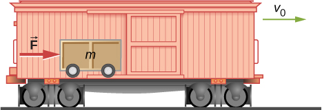
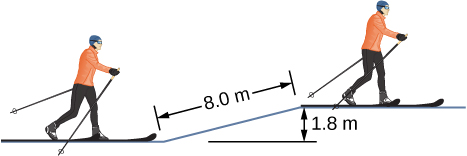
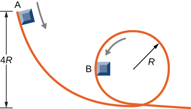
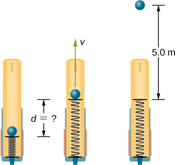
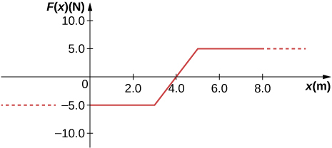
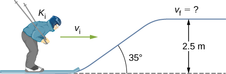
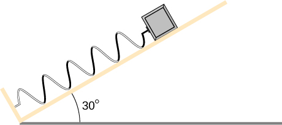
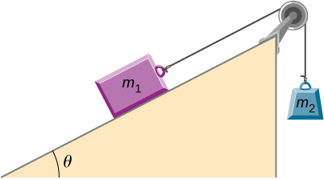

Problems
8.1 Potential Energy of a System
Using values from Table 8.1, how many DNA molecules could be broken by the energy carried by a single electron in the beam of an old-fashioned TV tube? (These electrons were not dangerous in themselves, but they did create dangerous X-rays. Later-model tube TVs had shielding that absorbed X-rays before they escaped and exposed viewers.)
If the energy in fusion bombs were used to supply the energy needs of the world, how many of the 9-megaton variety would be needed for a year’s supply of energy (using data from [link])?
A camera weighing 10 N falls from a small drone hovering overhead and enters free fall. What is the gravitational potential energy change of the camera from the drone to the ground if you take a reference point of (a) the ground being zero gravitational potential energy? (b) The drone being zero gravitational potential energy? What is the gravitational potential energy of the camera (c) before it falls from the drone and (d) after the camera lands on the ground if the reference point of zero gravitational potential energy is taken to be a second person looking out of a building from the ground?
Someone drops a pebble off of a docked cruise ship, above the water level. A person on a dock above the water level holds out a net to catch the pebble. (a) How much work is done on the pebble by gravity during the drop? (b) What is the change in the gravitational potential energy during the drop? If the gravitational potential energy is zero at the water line, what is the gravitational potential energy (c) when the pebble is dropped? (d) When it reaches the net? What if the gravitational potential energy was Joules at water level? (e) Find the answers to the same questions in (c) and (d).
A cat’s crinkle ball toy of mass is thrown straight up with an initial speed of . Assume in this problem that air drag is negligible. (a) What is the kinetic energy of the ball as it leaves the hand? (b) How much work is done by the gravitational force during the ball’s rise to its peak? (c) What is the change in the gravitational potential energy of the ball during the rise to its peak? (d) If the gravitational potential energy is taken to be zero at the point where it leaves your hand, what is the gravitational potential energy when it reaches the maximum height? (e) What if the gravitational potential energy is taken to be zero at the maximum height the ball reaches, what would the gravitational potential energy be when it leaves the hand? (f) What is the maximum height the ball reaches?
8.2 Conservative and Non-Conservative Forces
A force acts on a particle as it moves along the positive x-axis. (a) How much work does the force do on the particle as it moves from to (b) Picking a convenient reference point of the potential energy to be zero at find the potential energy for this force.
Find the force corresponding to the potential energy
The potential energy function for either one of the two atoms in a diatomic molecule is often approximated by where x is the distance between the atoms. (a) At what distance of separation does the potential energy have a local minimum (not at (b) What is the force on an atom at this separation? (c) How does the force vary with the separation distance?
A particle of mass moves under the influence of the force If its speed at is what is its speed at
A particle of mass moves under the influence of the force If its speed at is what is its speed at
A crate on rollers is being pushed without frictional loss of energy across the floor of a freight car (see the following figure). The car is moving to the right with a constant speed If the crate starts at rest relative to the freight car, then from the work-energy theorem, where d, the distance the crate moves, and v, the speed of the crate, are both measured relative to the freight car. (a) To an observer at rest beside the tracks, what distance is the crate pushed when it moves the distance d in the car? (b) What are the crate’s initial and final speeds and as measured by the observer beside the tracks? (c) Show that and, consequently, that work is equal to the change in kinetic energy in both reference systems.
8.3 Conservation of Energy
A boy throws a ball of mass straight upward with an initial speed of When the ball returns to the boy, its speed is How much much work does air resistance do on the ball during its flight?
A mouse of mass 200 g falls 100 m down a vertical mine shaft and lands at the bottom with a speed of 8.0 m/s. During its fall, how much work is done on the mouse by air resistance?
Using energy considerations and assuming negligible air resistance, show that a rock thrown from a bridge 20.0 m above water with an initial speed of 15.0 m/s strikes the water with a speed of 24.8 m/s independent of the direction thrown. (Hint: show that
A 1.0-kg ball at the end of a 2.0-m string swings in a vertical plane. At its lowest point the ball is moving with a speed of 10 m/s. (a) What is its speed at the top of its path? (b) What is the tension in the string when the ball is at the bottom and at the top of its path?
Ignoring details associated with friction, extra forces exerted by arm and leg muscles, and other factors, we can consider a pole vault as the conversion of an athlete’s running kinetic energy to gravitational potential energy. If an athlete is to lift their body 4.8 m during a vault, what speed must they have when they plant the pole?
Tarzan grabs a vine hanging vertically from a tall tree when he is running at (a) How high can he swing upward? (b) Does the length of the vine affect this height?
Assume that the force of a bow on an arrow behaves like the spring force. In aiming the arrow, an archer pulls the bow back 50 cm and holds it in position with a force of . If the mass of the arrow is and the “spring” is massless, what is the speed of the arrow immediately after it leaves the bow?
A man is skiing across level ground at a speed of when he comes to the small slope 1.8 m higher than ground level shown in the following figure. (a) If the skier coasts up the hill, what is his speed when he reaches the top plateau? Assume friction between the snow and skis is negligible. (b) What is his speed when he reaches the upper level if an frictional force acts on the skis?
A sled of mass 70 kg starts from rest and slides down a incline long. It then travels for 20 m horizontally before starting back up an incline. It travels 80 m along this incline before coming to rest. What is the magnitude of the net work done on the sled by friction?
A girl on a skateboard (total mass of 40 kg) is moving at a speed of 10 m/s at the bottom of a long ramp. The ramp is inclined at with respect to the horizontal. If she travels 14.2 m upward along the ramp before stopping, what is the net frictional force on her?
A baseball of mass 0.25 kg is hit at home plate with a speed of 40 m/s. When it lands in a seat in the left-field bleachers a horizontal distance 120 m from home plate, it is moving at 30 m/s. If the ball lands 20 m above the spot where it was hit, how much work is done on it by air resistance?
A small block of mass m slides without friction around the loop-the-loop apparatus shown below. (a) If the block starts from rest at A, what is its speed at B? (b) What is the force of the track on the block at B?
The massless spring of a spring gun has a force constant When the gun is aimed vertically, a 15-g projectile is shot to a height of 5.0 m above the end of the expanded spring. (See below.) How much was the spring compressed initially?
A small ball is tied to a string and set rotating with negligible friction in a vertical circle. If the ball moves over the top of the circle at its slowest possible speed (so that the tension in the string is negligible), what is the tension in the string at the bottom of the circle, assuming there is no additional energy added to the ball during rotation?
8.4 Potential Energy Diagrams and Stability
A mysterious constant force of 10 N acts horizontally on everything. The direction of the force is found to be always pointed toward a wall in a big hall. Find the potential energy of a particle due to this force when it is at a distance x from the wall, assuming the potential energy at the wall to be zero.
A single force (in newtons) acts on a 1.0-kg body. When the speed of the body is 4.0 m/s. What is its speed at
A particle of mass 4.0 kg is constrained to move along the x-axis under a single force where The particle’s speed at A, where is 6.0 m/s. What is its speed at B, where
The force on a particle of mass 2.0 kg varies with position according to (x in meters, F(x) in newtons). The particle’s velocity at is 5.0 m/s. Calculate the mechanical energy of the particle using (a) the origin as the reference point and (b) as the reference point. (c) Find the particle’s velocity at Do this part of the problem for each reference point.
A 4.0-kg particle moving along the x-axis is acted upon by the force whose functional form appears below. The velocity of the particle at is Find the particle’s speed at Does the particle turn around at some point and head back toward the origin? (e) Repeat part (d) if
A particle of mass 0.50 kg moves along the x-axis with a potential energy whose dependence on x is shown below. (a) What is the force on the particle at 12 m? (b) If the total mechanical energy E of the particle is −6.0 J, what are the minimum and maximum positions of the particle? (c) What are these positions if (d) If , what are the speeds of the particle at the positions listed in part (a)?
![The energy I of x in Joules is plotted as a function of x in meters. The horizontal scale runs from less thqan zero to over 20 meters, but is labeled only from 0 to 20. The vertical scale runs from –12.0 to 12 Joules. U of x is a cponstant 4.0 Joules for all x less than 4.0 meters. It rises linearly to 12.0 Joules at 6.0 meters, then decreases linearly to –12.0 Joules at 10.0 meters. It remains –12.0 Joules from 10.0 to 14.0 meters, then rises to 12.0 Joules at 18 meters. It remains at 12.0 joules for all x larger than 18 meters.](76bdc18933275e6aaa7beb640d8b4a3d4ffa4ac5.jpeg)
(a) Sketch a graph of the potential energy function where are constants. (b) What is the force corresponding to this potential energy? (c) Suppose a particle of mass m moving with this potential energy has a velocity when its position is . Show that the particle does not pass through the origin unless
8.5 Sources of Energy
In the cartoon movie Pocahontas, Pocahontas runs to the edge of a cliff and jumps off, showcasing the fun side of her personality. (a) If she is running at 3.0 m/s before jumping off the cliff and she hits the water at the bottom of the cliff at 20.0 m/s, how high is the cliff? Assume negligible air drag in this cartoon. (b) If she jumped off the same cliff from a standstill, how fast would she be falling right before she hit the water?
In the reality television show “Amazing Race”, a contestant is firing 3.0-kg watermelons from a slingshot to hit targets down the field. The slingshot is pulled back 2.0 m and the watermelon is considered to be at ground level. The launch point is 0.75 m from the ground and the targets are 10 m horizontally away. Calculate the spring constant of the slingshot.
In the Back to the Future movies, a DeLorean car of mass 1230 kg travels at 88 miles per hour to venture back to the future. (a) What is the kinetic energy of the DeLorean? (b) What spring constant would be needed to stop this DeLorean in a distance of 0.1m?
In the Hunger Games movie, Katniss Everdeen fires a 0.0200-kg arrow from ground level to pierce an apple up on a stage. The spring constant of the bow is 330 N/m and she pulls the arrow back a distance of 0.55 m. The apple on the stage is 5.00 m higher than the launching point of the arrow. At what speed does the arrow (a) leave the bow? (b) strike the apple?
In a “Top Fail” video, two women run at each other and collide by hitting exercise balls together. If each woman has a mass of 50 kg, which includes the exercise ball, and one woman runs to the right at 2.0 m/s and the other is running toward her at 1.0 m/s, (a) how much total kinetic energy is there in the system? (b) If energy is conserved after the collision and each exercise ball has a mass of 2.0 kg, how fast would the balls fly off toward the camera?
In a Coyote/Road Runner cartoon clip, a spring expands quickly and sends the coyote into a rock. If the spring extended 5 m and sent the coyote of mass 20 kg to a speed of 15 m/s, (a) what is the spring constant of this spring? (b) If the coyote were sent vertically into the air with the energy given to him by the spring, how high could he go if there were no non-conservative forces?
In an iconic movie scene, Forrest Gump runs around the country. If he is running at a constant speed of 3 m/s, would it take him more or less energy to run uphill or downhill and why?
In the movie Monty Python and the Holy Grail a cow is catapulted from the top of a castle wall over to the people down below. The gravitational potential energy is set to zero at ground level. The cow is launched from a spring of spring constant that is expanded 0.5 m from equilibrium. If the castle is 9.1 m tall and the mass of the cow is 110 kg, (a) what is the gravitational potential energy of the cow at the top of the castle? (b) What is the elastic spring energy of the cow before the catapult is released? (c) What is the speed of the cow right before it lands on the ground?
A 60.0-kg skier with an initial speed of 12.0 m/s coasts up a 2.50-m high rise as shown. Find her final speed at the top, given that the coefficient of friction between her skis and the snow is 0.80.
(a) How high a hill can a car coast up (engines disengaged) if work done by friction is negligible and its initial speed is 110 km/h? (b) If, in actuality, a 750-kg car with an initial speed of 110 km/h is observed to coast up a hill to a height 22.0 m above its starting point, how much thermal energy was generated by friction? (c) What is the average force of friction if the hill has a slope of above the horizontal?
A subway train is brought to a stop from a speed of 0.500 m/s in 0.400 m by a large spring bumper at the end of its track. What is the spring constant k of the spring?
A pogo stick has a spring with a spring constant of which can be compressed 12.0 cm. To what maximum height from the uncompressed spring can a child jump on the stick using only the energy in the spring, if the child and stick have a total mass of 40 kg?
A block of mass 500 g is attached to a spring of spring constant 80 N/m (see the following figure). The other end of the spring is attached to a support while the mass rests on a rough surface with a coefficient of friction of 0.20 that is inclined at angle of The block is pushed along the surface till the spring compresses by 10 cm and is then released from rest. (a) How much potential energy was stored in the block-spring-support system when the block was just released? (b) Determine the speed of the block when it crosses the point when the spring is neither compressed nor stretched. (c) Determine the position of the block where it just comes to rest on its way up the incline.
A block of mass 200 g is attached at the end of a massless spring at equilibrium length of spring constant 50 N/m. The other end of the spring is attached to the ceiling and the mass is released at a height considered to be where the gravitational potential energy is zero. (a) What is the net potential energy of the block at the instant the block is at the lowest point? (b) What is the net potential energy of the block at the midpoint of its descent? (c) What is the speed of the block at the midpoint of its descent?
A T-shirt cannon launches a shirt at 5.00 m/s from a platform height of 3.00 m from ground level. How fast will the shirt be traveling if it is caught by someone whose hands are (a) 1.00 m from ground level? (b) 4.00 m from ground level? Neglect air drag.
A child (32 kg) jumps up and down on a trampoline. The trampoline exerts a spring restoring force on the child with a constant of 5000 N/m. At the highest point of the bounce, the child is 1.0 m above the level surface of the trampoline. What is the compression distance of the trampoline? Neglect the bending of the legs or any transfer of energy of the child into the trampoline while jumping.
Shown below is a box of mass that sits on a frictionless incline at an angle above the horizontal . This box is connected by a relatively massless string, over a frictionless pulley, and finally connected to a box at rest over the ledge, labeled . If and are a height h above the ground and : (a) What is the initial gravitational potential energy of the system? (b) What is the final kinetic energy of the system when hits the ground?
